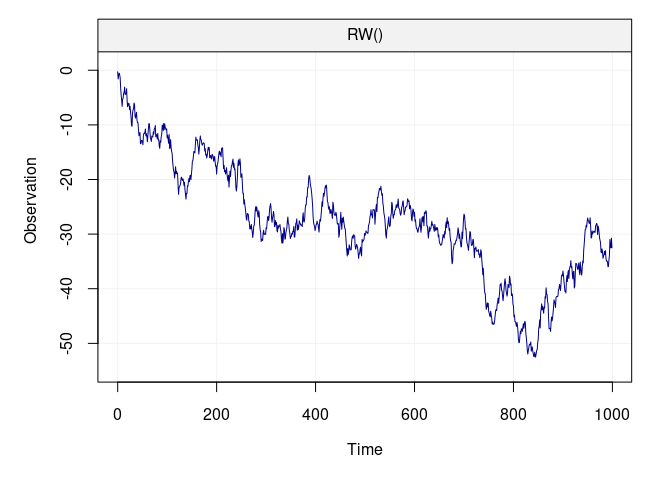
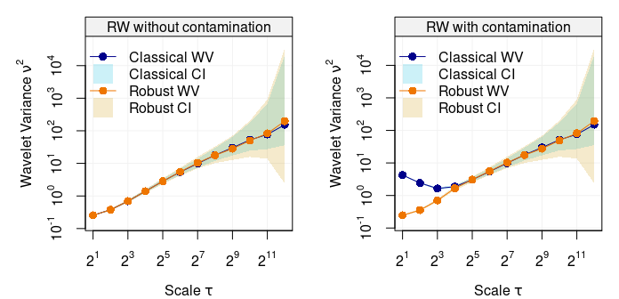

This repository is dedicated to the Wavelet Variance (wv) R package where different tools to perform wavelet variance analysis are provided (both standard and robust analysis). Below are instructions and examples on how to install and make use of the wv package.
Currently the only implemented wavelet filter in the package is the Haar wavelet filter.
Install Instructions
The wv package is available on both CRAN and GitHub. The CRAN version is considered stable while the GitHub version is subject to modifications/updates which may lead to installation problems or broken functions. You can install the stable version of the wv package with:
install.packages("wv")For users who are interested in having the latest developments, the GitHub version is ideal although more dependencies are required to run a stable version of the package. Most importantly, users must have a (C++) compiler installed on their machine that is compatible with R (e.g. Clang). Once you’ve made sure that you have a compatible C++ compiler installed on your computer, run the following code in an R session and you will be ready to use the devlopment version of wv.
# Install dependencies
install.packages(c("devtools"))
# Install/Update the package from GitHub
devtools::install_github("SMAC-Group/wv")
# Install the package with Vignettes/User Guides
devtools::install_github("SMAC-Group/wv", build_vignettes = TRUE)Wavelet Variance Analysis
Below are some examples of how to make use of some of the main functions in the wv package. Firstly, we highlight the functions that perform the wavelet decomposition of a time series (both the discrete and maximum-overlap discrete wavelet transforms) based on which the following functions can compute the wavelet variance and its corresponding confidence intervals for inference. These are particularly useful, for example, when comparing the wavelet variance of different time series in order to understand if they share common properties or not.
Discrete Wavelet Transform (DWT)
The DWT performs a wavelet decomposition by applying the wavelet filter to non-overlapping windows of the time series. Below is an example of how to perform this decomposition on a simulated Gaussian random walk process.
# Load packages
library(wv)
library(simts)
#>
#> Attaching package: 'simts'
#> The following object is masked from 'package:wv':
#>
#> unitConversion
# Set seed for reproducibility
set.seed(999)
# Simulate a Gaussian random walk
n = 10^3
model = RW(gamma2 = 1)
Xt = gen_gts(n = n, model = model)
# Plot the simulated random walk
plot(Xt)
Based on the above code, we have simulated a random walk with null expectation unit innovation variance. The functions to compute the DWT, access its output and plot the related wavelet coefficients can be found below.
# DWT
Xt.dwt = dwt(Xt)
#> Warning in dwt(Xt): The data has been truncated so that it is divisible by
#> `nlevels` (e.g. 2^*)
# Print the Wavelet Coefficients
summary(Xt.dwt)
#>
#> Results of DWT using haar filter with 8 levels:
#> Displaying only the first 6 coefficients...
#> Level 1 Wavelet Coefficients
#> -0.9281198 0.1909687 -0.4002392 -0.8957566 -0.7926733 0.09473632 ...
#> Level 2 Wavelet Coefficients
#> 0.2739394 -2.795066 0.8319477 0.3625764 -0.08550498 0.108777 ...
#> Level 3 Wavelet Coefficients
#> -2.384147 2.388987 -2.733086 -1.928826 -2.133592 -2.809311 ...
#> Level 4 Wavelet Coefficients
#> -6.282995 -5.729953 -7.616116 1.635971 1.2219 4.605007 ...
#> Level 5 Wavelet Coefficients
#> -10.03819 -6.631445 -0.6948675 -19.01644 12.1667 -5.350667 ...
#> Level 6 Wavelet Coefficients
#> -23.08426 -18.32217 18.40802 -8.680854 -4.335243 6.224648 ...
#> Level 7 Wavelet Coefficients
#> -34.68146 -7.485961 -5.448519 -30.51181 ...
#> Level 8 Wavelet Coefficients
#> -50.81154 1.13322 ...
# Plot of Discrete Wavelet Coefficients
plot(Xt.dwt)Discrete Wavelet Transform (DWT) for scales 1 to 4 for a simulated Gaussian white noise.
Maximum Overlap Discrete Wavelet Transformation (MODWT)
Compared to the DWT, the MODWT applies the wavelet filter to overlapping windows of the time series (more specifically it slides the filter by one observation at a time). As for the DWT, the functions to perform the MODWT are below.
# MODWT
Xt.modwt = modwt(Xt)
# Summary of Maximum Overlap Discrete Wavelet Coefficients
summary(Xt.modwt)
#>
#> Results of MODWT using haar filter with 9 levels:
#> Displaying only the first 6 coefficients...
#> Level 1 Wavelet Coefficients
#> -0.6562798 0.397592 0.1350352 -0.1386532 -0.2830119 -0.9393291 ...
#> Level 2 Wavelet Coefficients
#> 0.1369697 0.2645046 -0.2126415 -0.822003 -1.397533 -1.344998 ...
#> Level 3 Wavelet Coefficients
#> -0.8429231 -1.362249 -2.044266 -1.991537 -1.571604 -0.827054 ...
#> Level 4 Wavelet Coefficients
#> -1.570749 -1.175945 -0.7167598 -0.3172241 -0.04720348 0.01135659 ...
#> Level 5 Wavelet Coefficients
#> -1.774519 -1.731545 -1.702113 -1.711879 -1.649612 -1.530804 ...
#> Level 6 Wavelet Coefficients
#> -2.885532 -2.821419 -2.829503 -2.839451 -2.783538 -2.726905 ...
#> Level 7 Wavelet Coefficients
#> -3.065437 -3.069304 -3.063743 -3.03344 -2.997907 -2.955661 ...
#> Level 8 Wavelet Coefficients
#> -3.175721 -3.114701 -3.064177 -3.0097 -2.956361 -2.910441 ...
#> Level 9 Wavelet Coefficients
#> -6.967706 -6.925613 -6.884283 -6.838645 -6.79024 -6.735489 ...
# Plot of Maximum Overlap Discrete Wavelet Coefficients
plot(Xt.modwt, index = "all")
Maximum Overlap Discrete Wavelet Transform (MODWT) for scales 1 to 9 for a simulated Gaussian white noise.
Wavelet Variance
If the interest of the user lies solely in the wavelet variance (issued from either DWT or MODWT), then the package provides functions that directly compute this quantity and deliver the tools necessary to analyse it (confidence intervals and plots). Below is a code that simulates a white noise and a random walk process and directly plots their respective wavelet variances in a log-log plot applying the plot() function to the package function wvar().
# Set seed for reproducibility
set.seed(999)
# Simulate Gaussian White noise
n = 10^4
Xt = gen_gts(n = n, model = WN(sigma2 = 1))
# Simulate Gaussian Random walk
Yt = gen_gts(n = n, model = RW(gamma2 = 1))
# Plot WV
par(mfrow = c(1,2), mar = c(4,5,1,1))
plot(wvar(Xt), main = "White noise")
plot(wvar(Yt), main = "Random walk", legend_position = NULL)
Wavelet variance of two simulated processes, i.e white noise (left panel) and random walk (right panel).
As indicated in the legends, the light shaded blue area represents the 95% confidence intervals for each scale of estimated wavelet variance. However, there could be many practical settings where the time series can suffer from some “contamination” (e.g. outliers) which can seriously bias the standard estimator of wavelet variance. The code below randomly replaces one percent of the observations from the above simulated random walk with observations from a white noise process with larger variance.
# Add contamination
gamma = 0.01
Yt2 = Yt
Yt2[sample(1:n,round(gamma*n))] = rnorm(round(gamma*n),0,5)
par(mfrow = c(1,2), mar = c(4,5,1,1))
robust_eda(Yt, main = "RW without contamination")
robust_eda(Yt2, legend_position = NULL, main = "RW with contamination")
It can be seen how the classic and robust wavelet variance estimates agree when there is no contamination (left plot) but they classic estimates are heavily biased (especially at the first more informative scales) when the random walk has only 1% contamination.
When dealing with different time series, it is possible to compare their respective wavelet variances to understand if they have similar behaviour/properties. An example is given below where four different first-order autoregressive processes (with different values of the autoregressive parameters) are simulated and succesively their wavelet variance is computed.
# Simulate AR processes
n = 10^5
Xt = gen_gts(n = n, model = AR1(phi = 0.10, sigma2 = 1))
Yt = gen_gts(n = n, model = AR1(phi = 0.35, sigma2 = 1))
Zt = gen_gts(n = n, model = AR1(phi = 0.79, sigma2 = 1))
Wt = gen_gts(n = n, model = AR1(phi = 0.95, sigma2 = 1))
# Compute WV
wv_Xt = wvar(Xt)
wv_Yt = wvar(Yt)
wv_Zt = wvar(Zt)
wv_Wt = wvar(Wt)
# Plot results
compare_wvar(wv_Xt, wv_Yt, wv_Zt, wv_Wt)
As seen above, the function compare_wvar() allows to plot different outputs of the wvar() function and it can be seen how the four time series deliver different wavelet variances (as the autoregressive parameter approaches zero, the shape of the wavelet variance plot approaches the behaviour of the wavelet variance of a white noise process).
Wavelet Variance on IMU Data
In the package, we also add some datasets which are the wavelet variance computed based on real IMU data. Currently the package includes datasets adis_wv, imar_wv, kvh1750_wv, ln200_wv and navchip_av. We can plot these wavelet variance simply with the plot function. As an example:

User Guides
Various guides ship with package or are available on https://smac-group.com/ to provide insight into how to use the different methods. At the present time, the following vignettes are available:
- Process to Haar Wavelet Variance (Online)